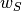
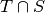

Since version 1.0, CWIPI offers multiple spatial interpolation methods. A specific spatial interpolation method can be assigned to each Coupling object.
Each method has a set of properties that can be adjusted (with CWP_Spatial_interp_property_set in C).
Note that some methods do not support all types of dof location.
Finally, each method relies on some geometric mapping data to perform spatial interpolation.
This data is computed by CWIPI and can be accessed to design customized interpolation functions.
Warning
Some spatial interpolation methods leave some target dofs unmapped if the interface meshes overlap partially.
The interpolated field for such targets is simply not computed.
Only the first  values of the receiving data array are thus filled by CWIPI, where
values of the receiving data array are thus filled by CWIPI, where  is the number of mapped targets (returned by
is the number of mapped targets (returned by CWP_N_computed_tgts_get), and  the number of field components (specified when creating the field and returned by
the number of field components (specified when creating the field and returned by CWP_Field_n_components_get).
Please refer to section Advanced functionalities for some examples of use.
The spatial interpolation methods can be divided into the following four families.
Interpolation from nearest neighbors
This family includes two methods:
CWP_SPATIAL_INTERP_FROM_NEAREST_SOURCES_LEAST_SQUARES: each target dof is mapped to itsn_neighborsnearest source dofs.
CWP_SPATIAL_INTERP_FROM_NEAREST_TARGETS_LEAST_SQUARES: each source dof is mapped to itsn_neighborsnearest target dofs (note that some targets may be mapped to zero source).
- Default interpolation
Both methods perform a Least Square interpolation weighted by inverse squared distance (see [Nealen 2004] for more details).
Properties
The following properties can be adjusted by the user:
n_neighbors: number of neighbors to interpolate from (integer, default value: 4)
polyfit_degree: degree of polynomial fit (integer, default value: 1)
Acceptable degrees-of-freedom
Since these are point cloud-based methods, they support all kinds of dof locations (mesh nodes, cell centers and user-defined points) for both source and target fields.
Interpolation from mesh intersection
This family includes only one method: CWP_SPATIAL_INTERP_FROM_INTERSECTION which consists on computing the overlap fractions between the elements of both interface meshes.
It is suited for conservative interpolation.
Default interpolation
The interpolated field at target
is computed as follows
where
designates a source element and

is the volume (or area for surface coupling interfaces) of
.Note that for each mapped target element, the interpolation weights sum to one. Target elements that intersect no source element are simply not mapped.

Properties
The intersection algorithm uses efficient bounding box collisions detection as a first step. The boxes can be inflated using a relative tolerance. This is especially useful for non-planar, surface interface meshes where alignment with cartesian axes might cause some detection misses if the tolerance is set too low. The
toleranceproperty is of type double and is set to 0.001 by default, but be can adjusted as well.
Acceptable degrees-of-freedom
Naturally, this method cannot be used to interpolate fields with dofs located at user-defined points. Note that in version 1.0 this interpolation method is also not available for node-based source and target fields, but it will be soon.
Warning
This method is only available for surface and volume interface meshes.
Interpolation from location
This family includes three methods:
CWP_SPATIAL_INTERP_FROM_LOCATION_MESH_LOCATION_OCTREE: only the target dofs contained inside the bounding box of at least one source mesh element are mapped. This candidate-detection step is performed efficiently using a distributed point octree structure. The exact location of these targets are then computed. If a target is associated to multiple source elements, only the nearest one will be kept (usually the one that contains that target).
CWP_SPATIAL_INTERP_FROM_LOCATION_MESH_LOCATION_BOXTREE: similar to the previous method except a bounding box tree is used for the first step instead.
CWP_SPATIAL_INTERP_FROM_LOCATION_MESH_LOCATION_LOCATE_ALL_TGT: similar to the first method except for the candidate-detection step which guarantees all targets are mapped. This method is therefore slower than the two previous ones in cases where the interface meshes overlap only partially.
Note
These first two methods are equivalent to the spatial interpolation method of versions 0.x but have been re-implemented to improve performance. Both methods yield the same results but the octree generally performs better.
Default interpolation
If the source field dofs are at cell centers, each mapped target simply gets the field value of its associated source mesh element. If the source field dofs are located at nodes, the generalized barycentric coordinates of the target are used as interpolation weights if the source field dofs are located at nodes.
Properties
As for the intersection method, the first step of the localization method uses bounding boxes inflated by a relative geometric tolerance. The
toleranceproperty is of type double and is set to 0.001 by default but be can adjusted as well. Again, it is recommended to tune this property for non-planar, surface interface meshes when using either of the first two methods, in order to avoid true positive detection errors. The third method is however much less sensitive to this property so it should be kept to a low value to avoid detecting too many false positive candidates, which could impair performance.
Acceptable degrees-of-freedom
This interpolation method requires the source field dofs to be located at either mesh nodes or cell centers. However, target field dofs can also be located at user-defined points.
Interpolation from identity
This family includes only one method: CWP_SPATIAL_INTERP_FROM_IDENTITY which consists in mapping each target dof to the source dof with same global id.
It might be useful for conforming interface meshes with different MPI partitioning.
- Default interpolation
Each target dof is assigned the field value of its mapped source dof.
Properties
This method has no properties.
Acceptable degrees-of-freedom
This method supports all kinds of dof location.